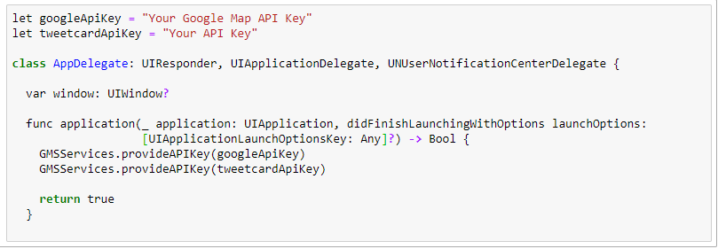

Installation
Introduction
This documentation is designed to help users understand how to connect APPs with Tweet C.A.R.D. API. Before starting. Besides, it could also let users get more familiar with the services that the API offered.
Tweet C.A.R.D. is a recommendation system API. It would make recommendations with credit card offers, such as cash back, movies discount, parking discount, discount in gas station, and bonus rewards.
Now, we’ll introduce the services that the API provides:
◎Recommendations for credit cards that users already have when they shopping.
◎Recommendations for applying for new cards.
◎A quick link to bank’s website page for users to apply for the new cards.
◎A rank list for each bank to understand its users’ consuming behaviors more through book keeping records that include users’ cash flow and credit card transactions that from other banks.
◎Analyses and graphs for banks to know the performance after connecting to the API.
The API is designed for book keeping Apps now. With the development of Open Banking, the API could get more information through banks. Thus, this API would be available for more other APPs.
With Tweet C.A.R.D. API, you can add extra value as a book keeping application. You can easily outperform other book keeping applications for the function of recommendations. We offer experience
Get Started
Before you can begin working with Tweet C.A.R.D. API on iOS, first of all, please make sure that your APP is on the latest version of Xcode. Second, get an API key. To use C.A.R.D. SDK, you must have an API key. The API key is a unique identifier that is used to authenticate requests associated with your project for usage and billing purposes.
To use C.A.R.D. SDK, you must have an API key. The API key is a unique identifier that is used to authenticate requests associated with your project for usage and billing purposes.
The following steps will show you how to get an API key:
1. Visit the official website of Tweet C.A.R.D. API.
2. Log in or create a new account if you don’t have one.
3. Click the APP button on the left side, select API Credential, and click the Create an API key button.
4. The new page will show you your new API key.
5. The new API key will show on the list, Your API Key, on the API Credential page.
With our API key, you could connect your APP with this recommendation system. However, to make the recommendation results better, you should also apply for Google Map API key so that Tweet C.A.R.D. may receive users' locations. Now, we're going to connecting Tweet C.A.R.D. API.
ABOUT API KEYs
Click "AppDelegate.swift" and "Add API key", and put Tweet C.A.R.D. API Key anf Google Map API Key at the function in application.
CONNECTING DATA
1. Build the required format.
New a file named "CreditCard.swift" and CreditCard type of object to receive data.
2. Analyze the files in the form of JSON.
getCard() is one of the funcitons that calls API, and it can analyze the files in the form of JSON.
CONNECTING FUNCTIONS, APPLYING FOR NEW CARDS
1. Based on the places that users often visited in the past.
Please take connect function to get this service.
Parameter:auth_id (The No. of users. ID number is recommended.)
2. Based on the position that right now the user is.
Please take connect function to get this service.
Parameter:auth_id (The No. of users. ID number is recommended.)
CONNECTING FUNCTIONS, THE USAGE OF CARDS
1. Connect the different scenatios while using cards.
It'll rank the scenarios that users might be according to the API.
Parameter:auth_id (The No. of users. ID number is recommended.)
speed_now (The speed that the user's device receives.)
2. When users are at department stores.
Parameter:auth_id (The No. of users. ID number is recommended.)
3. When users are at gas stations.
Parameter:auth_id (The No. of users. ID number is recommended.)
4. When users are at movie theaters.
Parameter:auth_id (The No. of users. ID number is recommended.)

5. When users are at parking lot.
Parameter:auth_id (The No. of users. ID number is recommended.)
6. When users are at restaurants.
Parameter:auth_id (The No. of users. ID number is recommended.)

Documentation
Recommend.py
The class shows how the API deals with the credit card information. For each credit card offer, the API will check whether users have the cards that provide the discount and whether users meet the conditions to get the offer. Moreover, the API will list the top three credit cards that users can save more money by using them.
The following functions are recommendations for applying for new cards. First, take users’ basic information, and all the credit cards that the user has. Before making recommendations, take the user’s income and job occupation into consideration. Last, make sure users’ positions are allowed to use the discount that the API recommends.
def parking_discount_for_apply_withLocation(lat,lng,place_name,auth_id):
def cash_return_discount_for_apply_withLocation(lat,lng,place_name,auth_id):
def gas_discount_for_apply_withLocation(lat,lng,place_name,auth_id):
The order of the recommendation comes to discount for this time, cash back, gasoline money, and point rewards. The function will find out the most used way that users add gasoline. (Hand oiling/Self-service)
def point_return_discount_for_apply_withLocation (lat,lng,place_name,place_type,auth_id):
For bonus reward, determine whether the card will amplify bonus and extra bonus for birthday first, then compare the two discounts and save them into the recommend list. They will be saved as how many times that the card amplifies the bonus and how much for one dollar. One thing to notice, only bonus for banks is included in the calculations. The function will find places where the discount is available by using places’ names and place types.
def movie_discount_for_apply_withLocation(lat,lng,place_name,auth_id):
For movie discount, the discount, x % off, is better than the discount, minus x dollars, by default. Unless, the discounted price can be known before shopping.
The recommendations for the cards that users already have need to know what kind of credit cards that users have and to determine whether the discounts can be used by those cards. Further comparison for recommendations are noted in each function below.
def parking_discount(lat, lng, return place_ name,id_number):
def cash_return_discount(lat, lng, return place_ name,id_number):
def gas_discount(lat ,lng, return place_ name,id_number):
The order of the recommendation comes to discount for this time, cash back, gasoline money*, and point rewards. The function will find out the most used way that users add gasoline. (Hand oiling/Self-service)
*gasoline money: can be used to change other gifts that the gasoline company offered.
def point_return_discount(lat, lng, return place_ name,id_number):
For bonus reward, determine whether the card will amplify bonus and extra bonus for birthday first, then compare the two discounts and save them into the recommend list. They will be saved as how many times that the card amplifies the bonus and how much for one dollar. One thing to notice, only bonus for banks is included in the calculations. The function will find places where the discount is available by using places’ names and place types.
def movie_discount(lat, lng, return place_ name,id_number):
For movie discount, the discount, x % off, is better than the discount, minus x dollars, by default. Unless, the discounted price can be known before shopping.
def return_enough(resp1,resp2):
The function is to determine whether the first recommendation list gets the enough results (3 results) or not. If not, the results in the second list will make up for the absence.
def has_limit_or_not(limit_str):
The function is to find the limit on credit cards’ usage count and turn it from string type into int type.
def cannot_use_in_here(place_list):
Among all the credit card discounts, there might be a note that mentions the discount is not for those places. The function will return those places.
def can_use_in_here(place_name,place_list):
The function is to determine whether credit cards’ discount can be used at the place(shop) where users are.
The two functions below are to convert the results as narratives when returning.
The function is for gas. The discounts for gas (cash back/ point/price discount) will be converted. The function for movies.The discounts for movies (x% off/ minus dollars) will be converted. def update_which(result):
def update_which_type(result):
The following functions are to calculate how much users have spent on the cards.
def total_consumption_last_month(card_name):
def total_consumption_last_three_months(card_name):
def total_consumption_last_year(card_name):
def cash_or_point(auth_id):
The function is to check which users prefer, cash back or bonus reward.
Context.py
The class mainly deals with the information that we get from the APP that is connected to the API and what kinds of conditions we pay attention to before making recommendations.
def change_user_status(auth_id):
There are two kinds of users in the API. Once a user has used the APP for more than three months and he/she has more than 250 records in the APP, we’ll change him/her as a regular. Otherwise, he/she would be seen as a new user.
def user_status(auth_id):
To make sure which identity the user is, a new user or a regular.
def place_preference(auth_id, context_sum,weight):
The function is to take users’ preference of place type into consideration when making recommendations.
Next, we’ll get to deal with the information collected from the APP. Given that the recommendations are mainly according to the place type. First of all, the API will get the places that the user has been to from the records of the APP and those places would be classified into 5 categories if they belong to the 5 categories. They are restaurants & cafe, department stores & shopping malls, movie theaters, parking lot, and gas stations.
# The API’s place type: Labels from google map
# 百貨公司: department_store, shopping_mall
# 加油站: gas_station
# 電影院: movie_theater
# 停車場: parking
# 餐廳: cafe, restaurant
In addition to the history records from the APP, the API can also get the place that users are when they ask for recommendations. The API will find out the specific place that users are. If the API could not determine by latitude and longitude, users would be thought to be at the place that is nearest to them. On the same time, the place should be in the 5 place types that we mentioned above.
As we mentioned before, there are new users and regulars. For regulars, the API has already got enough data from their history records to make recommendations. As for new users, we have a cold start problem. Thus, the API will do grouping to make recommendations to new users.
def find_similar(auth_id):
The function is to divide existing users into groups by combining k-means clustering and decision tree. First, read csv file, which includes users’ age, sex, income, average cost per month and preference to several locations, by pandas. Then we use k-means clustering by certain features and get the clustering result, which will be the input of decision tree. After performing decision tree on k-means clustering result, we obtain the classification result of existing users.
When recommending cards that users already have, the API takes users’ positions, time, users’ moving speed into consideration. Besides, the API would also determine whether users can drive or not to evaluate the importance of discount for parking and gas to users. Those functions below are paying attention to those background information.
def distance(origin,destinations):
To calculate the distance between the user’s position and the destinations. The destinations are in a list that contains the 5 place types’ positions, and the function will return the one with the shortest distance, namely the one that takes less time.
def kmean_score_and_tree():
The function takes the result of find_similar, and finds the place type that users in the same group usually go. Those place types will get extra points to the new user’s recommendation list.
def tree_to_code(tree, feature_names,feature_value):
def classification_(clf,group_place_score,feature_value,feature_cols,context_sum):
After obtaining the decision tree and the feature value of the current user, the function classification_ will classify the user by tree_to_code and add points according to the preference of the group.
def can_drive_or_not(id_number):
The function is to know whether users can drive or not. First, through users’ accounting records, we can know whether users have spent money on gas or parking fees or not. Second, the function will take their preference of place and preference of discount to know whether gas or parking fees are important to their daily life. Last, the function will return yes or no according to the result from the first two steps.
def speed(speed_per_hour):
After knowing whether users can drive or not, we separate them with three situations. First one is that users can drive and their speed is over 30 km/hr, discount for gas and for parking fee will add three points. Second one is that users can drive and their speed is below 30 km/hr, discount for gas and for parking fee will add one point. Last one is that users cannot drive, then no point will be added.
Next, we’ll introduce two algorithms that the API offered to make recommendations. Both algorithms will contain those above-mentioned functions. The APP owners could choose one of the algorithms according to their own preference.
def book_keeping_record_by_freq(auth_id, context_sum, weight):
The first one is to count the frequency of each place type in the user’s book keeping record. to predict the user’s preference and recommend him/her the related credit card discount.
def book_keeping_record_by_time(auth_id, context_sum, weight):
The second one is to put more emphasis on users’ habits from the aspect of time. For instance, on Tuesday noon (12 p.m.), the user could get the recommendations that are according to the place type that he/she had been to during the past several Tuesdays from 10 a.m. to 2 p.m. in the recent two months. Among the records that matched the restrictions, the place type on the record that is closer to 12 a.m. would get a higher point.
Those above-mentioned recommendations only focus on the credit cards that users have had. Next, we’ll introduce the recommendations focus on the credit cards that users might be interested in
def find_place_nearby(lat,lng):
For each place type, the range is that radius equals 5000. The function uses latitude and longitude to check whether the position is in the range or not. If not, this function will calculate how much time it would take from the position the function gets to the 5 place types, and return the smallest result. Otherwise, users are supposed to be exactly at one of the 5 place types.
Besides the moment that users ask for recommendations, the API also puts emphasis on users’ habits. Thus, to find out places that each user often visits is also part of work in the API.
def find_freq_place(auth_id):
The function will count the place. If the place is new to the user’s storage, it would be added to the storage and count as 1. Otherwise, the place will be counted one more time in the storage.
def recommend_discount_for_place(auth_id, place):
For each place, the function separates them into two groups. One weighs cash back more, while the other weighs bonus reward more. Next, according to users’ preference of place and preference of discount, they will be classified into those groups to get the recommendations. 5 recommendations will be listed in each group.
Main.py
The class is to collect the data from the APP. Take the data in the form of JSON and convert the data into String type to decode. Then, convert the String type data into dictionary type and save it.
def bookkeeping_to_gLocation(id_number):
Take the records from the APP. For the places that are included in the 5 categories, make classifications and save them. The storage of records include ID Number, place type, phone number, transaction time, store name, address of the place, latitude and longitude.(convert it whenever users record their expense)
def recommend_place_for_use(auth_id, speed_now):
The function is to calculate and rank users’ preference of place type. Moreover, it could also determine which identity the user is, a novice or a regular, combine with other background information, and return the list, recommend_order, with place types that had ranked inside the list.
The following functions are about recommendations for applying for a new credit card. In this part, two ways of making recommendations are involved.
def recommend_place_for_apply_withPlace(auth_id):
When users ask for recommendations, the function will receive the positions that they are if the positions are available. After that, call “recommend_discount_for_place(auth_id, place)” in class context to do recommendations.
def recommend_place_for_apply(auth_id):
If users’ positions are not available when they ask for recommendations, the function will find place types that users visit a lot. Then, call the function to return the recommendations. If users are new, the function will call “find_similar(auth_id)” in class context to find similar person first.
Next part is about recommendations of credit cards that users have had. In this part, those functions need to post, for they need to get users’ positions such as places’ names, latitude, and longitude from the APP. (places that are in the range, r=5, are included.) There are five functions that deal with recommendation requests from 5 different place types. The API would make sure if cash back weighs more than bonus rewards to that user before making recommendations, and those functions will return a list that contains three recommendations.Each place type would have its button.
def mall_recommend(auth_id):
The function would be called if the “mall” button is pressed by users.
def gas_recommend(auth_id):
The function would be called if the “gas” button is pressed by users.
def theater_recommend(auth_id):
The function would be called if the “theaterl” button is pressed by users.
def parking_recommend(auth_id):
The function would be called if the “parking” button is pressed by users.
def restuarant_recommend(auth_id):
The function would be called if the “restaurant” button is pressed by users.
The following functions are to deal with the forms that the API ask users to fill in the very beginning.
def add_prefer_place(auth_id):
The function is to receive users’ preference of place type.
def add_prefer_discount(auth_id):
The function is to receive users’ preference of discount.
def add_personal_data(auth_id):
The function is to receive users’ basic information.
def change_personal_data(auth_id):
The function is to change users’ basic information and preference of discount.
App.py
The class is to connect the API to the database through Flask, a frame of Python. It takes MVC framework that is Model (database), View (interface), and Controller where runs algorithms.